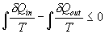
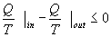
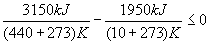
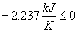
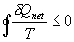
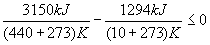
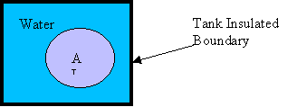
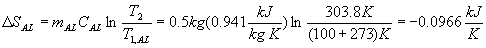
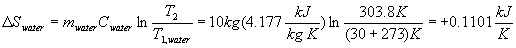

MODULE 11: ENTROPY
(fragments of the CD that comes with
Cengel&Boles's book "Thermodynamics", 3-d edition, McGraw-Hill,
1998)
Example 1
For a particular power plant the heat added
and rejected both occur at constant temperature and no other processes experience
any heat transfer. The heat is added in the amount of 3150 kJ at 440ºC and is
rejected in the amount of 1950 kJ at 20ºC. Is the Clausius Inequality satisfied
and is the cycle reversible or irreversible?





Clausius Inequality is satisfied. Since the inequality is less than zero, the cycle has at least one irreversible process and the cycle is irreversible.
Example 2
For a particular power plant the heat added and rejected both occur at constant temperature no other processes experience any heat transfer. The heat is added in the amount of 3150 kJ at 440ºC and is rejected in the amount of 1294.46 kJ at 20ºC. Is the Clausius Inequality satisfied and is the cycle reversible or irreversible?




Clausius Inequality is satisfied. Since the cyclic integral is equal to zero, the cycle is made of reversible processes. What cycle can this be?
Example 3
Find the total entropy change, or entropy generation, for the transfer of 1000 kJ of heat energy from a heat reservoir at 1000 K to a heat reservoir at 500 K.
The second law for the isolated system is
What happens when the low-temperature reservoir is at 750 K?
The effect of decreasing the T for heat transfer is to reduce the entropy generation or total entropy change of the universe due to the isolated system and the irreversibilities associated with the heat transfer process.
Example 4
Find the entropy and/or temperature of steam at the following states:
| P | T | Region | s kJ/(kg K) |
| 5 MPa | 120ºC |  | |
| 1 MPa | 50ºC | | |
| 1.8 MPa | 400ºC | | |
| 40 kPa | | Quality, x=0.9 | |
| 40 kPa | | | 7.1794 |
Answer to Example 4
| P | T | Region | s kJ/(kg K) |
| 5 MPa | 120ºC | Compressed Liquid and
in the table | 1.5233 |
| 1 MPa | 50ºC | Compressed Liquid but
not in the table | s=sf at 50ºC
=0.7038 |
| 1.8 MPa | 400ºC | Superheated | 7.1794 |
| 40 kPa | T=Tsat
=75.87ºC | Quality, x=0.9
Saturated mixture | s=sf+xsfg
= 7.0056 |
| 40 kPa | T=Tsat
=75.87ºC | sf<s<sg at P
Saturated mixture
x=(s-sf)/sfg
=0.9262 | 7.1794 |
Example 5
Determine the entropy change of water contained in a closed system as it changes phase from saturated liquid to saturated vapor when the pressure is 0.1MPa and constant. Why is the entropy change positive for this process?
System: The water contained in the system (a piston-cylinder device)
?
Property Relation: Steam Tables
Process and Process Diagram: Constant pressure (sketch the process relative to the saturation lines)
Conservation Principles:
Using the definition of entropy change, the entropy change of the water per mass is
The entropy change is positive because:
Example 6
Steam at 1 MPa, 600ºC expands in a turbine to 0.01 MPa. If the process is isentropic, find the final temperature, final enthalpy of the steam, and the turbine work.
System: The control volume formed by the turbine
Property Relation: Use the Steam Tables
Process and Process Diagram: Isentropic (Sketch the process relative to the saturation lines on the T-s diagram)
Conservation Principles:
Assume: steady-state, steady-flow, one entrance, one exit, neglect KE and PE.
Conservation of mass:
First Law or conservation of energy:
The process is isentropic and thus adiabatic and reversible; therefore Q = 0. The conservation of energy becomes
Since the mass flow rates in and out are equal, solve for the work done per unit mass
Now, let's go to the steam tables to find the h's.
s2 = s1 = 8.0290 kJ/(kg K )
At P2, sf = 0.6491 kJ/(kg K), and sg = 8.1510 kJ/(kg K); thus, sf < s2 < sg.
State 2 is in the saturation region, and the quality is needed to specify the state.
Since state 2 is in the two-phase region, T2 = Tsat at P2= 45.8ºC.
Example 7
Aluminum at 100ºC is placed in a large, insulated tank having 10 kg of water at a temperature of 30ºC. If the mass of the aluminum is 0.5 kg, find the final equilibrium temperature of the aluminum and water, the entropy change of the aluminum and the water, and the total entropy change of the universe because of this process. Before we work the problem, what do you think the answers ought to be? Are entropy changes going to be positive or negative? What about the entropy generated as the process takes place?
System: Closed system including the aluminum and water.

Property Relation:.
Process: Constant volume, adiabatic, no work energy exchange between the aluminum and water.
Conservation Principles:
Apply the first law, closed system to the aluminum-water system.
Using the solid and incompressible liquid relations, we have
But at equilibrium, T2AL= T2water = T2
The second law gives the entropy production, or total entropy change of the universe, as
Using the entropy change equation for solids and liquids,


Why is  SAL negative? Why is
SAL negative? Why is  Swater positive?
Swater positive?
Why is Sgen or  STotal positive?
STotal positive?